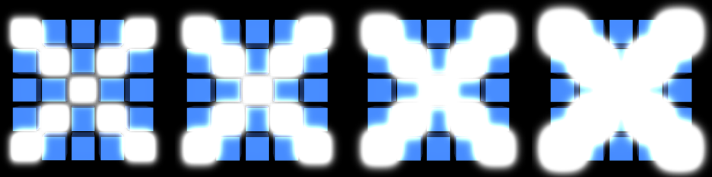
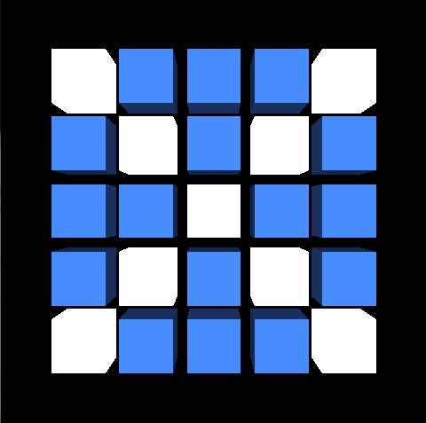

Bloom effect using OpenGL ES 3.0.
Introduction
- Note
- This sample uses OpenGL ES 3.0.
The source for this sample can be found in the folder of the SDK.
This tutorial assumes you know how to create a new project (if not, please start with First Android Native Application) and you have read and understood both Simple Cube and Lighting.
Overview

Bloom effect: the intensity changes from very weak to very strong.
The application shows a bloom effect implementation. It draws cubes arranged in a two-dimensional 5x5 array, from which only the diagonal ones are bloomed. The intensity of the bloom effect changes from very weak, where each cube affected by the effect looks exactly as the normal ones, to very strong, when bloomed cubes make up an X shape.
The bloom effect is implemented as follows:
- A scene (5x5 array of cubes: cubes on diagonals are white, others are blue) is drawn to a render target.
- Elements that should be bloomed (the brighter ones, in this case cubes placed on diagonals) are drawn into downscaled texture object (where the rest of the scene is black).
- The result texture from step 2 is horizontally blurred - the outcome is stored in a texture which is then used for the vertical blur. This step can be repeated as described later (*).
- Both the texture in which the vertically & horizontally blurred image has been stored (result of step 3), and the texture from step 1 are blended (horizontally & vertically) and drawn into the back buffer.
(*) The blend effect is not constant during the rendering process: it changes from very weak to very strong. This is achieved by repeating step 3 a varying amount of times (depending on the required intensity of the effect) - the only difference is that for the n-th iteration the generated result of (n-th - 1) is taken as a source for the horizontal blur. To make the bloom effect more smooth, we also use continuous sampling of the textures. The results of the last two iterations from step 3 are used for the final combination pass. The colours of those two textures are mixed together with an appropriate factor value. (for more details please see the mix() function description in the OpenGL ES Shading Language documentation).
Besides the bloom effect, the application also shows:
- matrix calculations (e.g. used for perspective view),
- instanced drawing (each cube drawn on a screen is an instance of the same object),
- lighting (the model is lit by a directional light),
- rendering into a texture.
Instanced Drawing
Each cube drawn on the screen is an instance of the same object. Let's go through the whole mechanism step by step.
It is assumed that all of below functions are called for an active program object responsible for scene rendering.
We want to draw a 5x5 two-dimensional array of cubes. It is important to mention that white and blue cubes are still the instances of the same object (the difference in colours will be described later). In the code we are using define
#define NUMBER_OF_CUBES (25)
Generate a cubic shape. For more details how the cube vertices are created please refer to Simple Cube. We want our cubes to be a little bit smaller to fit in a screen. In this simple model, we could achieve that in many ways, but let's use the simplest one - scale the cube using multiplier. Thanks to that cube vertices will not be spread in a range from <-1, -1, -1> to <1, 1, 1>, but adjusted accordingly to used multiplier.
#define CUBE_SCALAR (0.8f)
Please look into tutorials/Bloom/jni/CubeModel.cpp to see how the cube triangle vertices are retrieved.
Now we need to transfer generated info into an array buffer object.
Define an array of generic vertex attribute data. Make sure that a proper buffer object (one which contains cube vertices data) is currently bound to GL_ARRAY_BUFFER. In our application we are re-binding it many times, so before calling glVertexAttribPointer() we bind it again. In one of the next steps we will describe what the sceneRenderingProgramLocationsPtr->attribCubeVertexCoordinates stands for, so don't worry about it now (it will be described in Shader Objects used for Instanced Drawing).
GL_FLOAT,
GL_FALSE,
0,
NULL) );
When this is ready, we have to enable vertex attrib array.
We are now ready to draw multiple instanced of the same object. We use a special function for that, which is glDrawArraysInstanced()
GL_CHECK(glDrawArraysInstanced(GL_TRIANGLES,
0,
We wanted the cubes to be arranged in 5x5 two-dimensional array. We have to calculate location for each cube. This is done in getCubeLocations() function.
GLint numberOfRows,
GLint* numberOfCubeLocationCoordinatesPtr)
{
ASSERT(numberOfCubeLocationCoordinatesPtr != NULL);
const float distance = distanceBetweenCubes + 2 * cubeScalar;
int numberOfCubeLocationCoordinates = 0;
const int numberOfPointCoordinates = 2;
const float xStart = -(
float(numberOfColumns - 1) / 2.0f *
distance);
const float yStart = -(
float(numberOfRows - 1) / 2.0f *
distance);
numberOfCubeLocationCoordinates = numberOfPointCoordinates * numberOfColumns * numberOfRows;
result = (
GLfloat*) malloc(numberOfCubeLocationCoordinates *
sizeof(
GLfloat) );
for (int rowIndex = 0; rowIndex < numberOfRows; rowIndex++)
{
for (int columnIndex = 0; columnIndex < numberOfColumns; columnIndex++)
{
result[index++] = xStart + (rowIndex *
distance);
result[index++] = yStart + (columnIndex *
distance);
}
}
*numberOfCubeLocationCoordinatesPtr = numberOfCubeLocationCoordinates;
return result;
}
The result is then passed to uniform buffer object
GL_CHECK(glBindBuffer(GL_UNIFORM_BUFFER,
GL_CHECK(glBufferData(GL_UNIFORM_BUFFER,
GL_STATIC_DRAW) );
Which is then used as a source for program uniform block data. In one of the next steps we will describe what the sceneRenderingProgramLocationsPtr->uniformBlockCubeProperties stands for, so don't worry about it now (it will be described in Shader Objects used for Instanced Drawing).
0 ) );
GL_CHECK(glBindBufferBase (GL_UNIFORM_BUFFER,
0,
Shader Objects used for Instanced Drawing
Let's focus on a program object now. It is assumed that you understand the mechanism of preparing and using program objects. If not, please refer to previous tutorials.
Vertex shader source:
#version 300 es
#define NUMBER_OF_CUBES (25)
0, 1, 0, 1, 0,
0, 0, 1, 0, 0,
0, 1, 0, 1, 0,
1, 0, 0, 0, 1);
{
};
in
vec3 cube_vertex_coordinates;
in
vec3 cube_vertex_normals;
flat out int is_cube_placed_on_diagonal;
{
mat4 cube_location_matrix =
mat4(1.0, 0.0, 0.0, 0.0,
0.0, 1.0, 0.0, 0.0,
0.0, 0.0, 1.0, 0.0,
locations[gl_InstanceID].
x, locations[gl_InstanceID].
y, 0.0, 1.0);
mat4 model_view_projection_matrix = mvp_matrix * cube_location_matrix;
is_cube_placed_on_diagonal = is_diagonal_cube[gl_InstanceID];
normal =
vec3(model_view_matrix *
vec4(cube_vertex_normals, 0.0)).xyz;
vertex = model_view_matrix *
vec4(cube_vertex_coordinates, 1.0);
gl_Position = model_view_projection_matrix *
vec4(cube_vertex_coordinates, 1.0);
}
As you can see, in the vertex shader we are using cube_vertex_coordinates attribute. And it's location should be used as the first argument in glVertexAttribPointer() described in one of the previous steps.
To get the attribute location it is enough to call:
locationsStoragePtr->attribCubeVertexCoordinates =
GL_CHECK(glGetAttribLocation (programObjectId,
"cube_vertex_coordinates") );
There is also a uniform block used (cube_properties). It's location should be used as a second argument in glUniformBlockBinding() described in one of the previous steps.
To get the uniform block location, it is enough to call:
locationsStoragePtr->uniformBlockCubeProperties =
GL_CHECK(glGetUniformBlockIndex(programObjectId,
"cube_properties") );
In the shader we have information about each cube location. According to the OpenGL ES Shading Language specification, the variable gl_InstanceID is a vertex shader input variable that holds the instance number of the current primitive in an instanced draw call. We are using this variable to refer to required element of our locations array stored in uniform block. This information is then used to prepare translation matrix which is then used for setting vertices in NDC space.
Fragment shader source:
#version 300 es
#define EPSILON (0.00001)
struct _light_properties
{
float constant_attenuation;
float linear_attenuation;
float quadratic_attenauation;
float shininess;
float strength;
};
uniform _light_properties light_properties;
flat in int is_cube_placed_on_diagonal;
{
vec4 vertex_color =
vec4(0.2, 0.4, 0.8, 1.0);
float attenuation = 1.0 / (light_properties.constant_attenuation + (light_properties.linear_attenuation + light_properties.quadratic_attenauation));
vec3 camera_direction = camera_position -
vec3(vertex);
float diffuse =
max(0.0, dot(normalized_normals, light_direction));
vec3 half_vector =
normalize(light_direction + camera_direction);
float specular = 0.0;
if (abs(diffuse - 0.0) > EPSILON)
{
specular =
max(0.0, dot(half_vector, normal));
specular = pow(specular, light_properties.shininess) * light_properties.strength;
}
vec3 scattered_light = light_properties.ambient * attenuation + diffuse * attenuation * light_properties.color;
vec3 reflected_light = light_properties.color * specular * attenuation;
vec3 calculated_color =
min(vertex_color.
xyz * scattered_light + reflected_light,
vec3(1.0) );
vec4 color_to_be_returned =
vec4(calculated_color, 1.0);
normal_scene_color =
vec4(0.0);
bloom_element_color =
vec4(0.0);
if (is_cube_placed_on_diagonal == 1)
{
bloom_element_color =
vec4(1.0, 1.0, 1.0, 1.0);
}
else
{
normal_scene_color = color_to_be_returned;
}
}
In the fragment shader there are some colours calculations implemented which stand for applying lighting effect. For more details, please read Lighting.
More details connected with the shader implementations will be described later (in Rendering Scene to Texture).
Rendering Scene to Texture
In the application we are using rendering into texture mechanism many times, but let's explain this using a single case only.
If we want our scene to be render into a texture, we should do as follows:
Generate a framebuffer and a texture objects. Do not forget about setting proper parameters for those objects. We want to have only one output from the shader object (a colour scene with blue and white cubes). We need a depth texture as well, because the scene is lit by a directional light and depth values will be used for light calculations.
framebufferObjectIdPtr) );
originalTextureObjectIdPtr) );
depthToIdPtr) );
GL_CHECK(glBindFramebuffer(GL_FRAMEBUFFER,
*framebufferObjectIdPtr) );
*originalTextureObjectIdPtr) );
0,
GL_RGBA8,
0,
GL_RGBA,
GL_UNSIGNED_BYTE,
NULL) );
GL_TEXTURE_WRAP_S,
GL_CLAMP_TO_EDGE) );
GL_TEXTURE_WRAP_T,
GL_CLAMP_TO_EDGE) );
GL_TEXTURE_MAG_FILTER,
GL_LINEAR) );
GL_TEXTURE_MIN_FILTER,
GL_LINEAR) );
*depthToIdPtr) );
0,
GL_DEPTH_COMPONENT32F,
0,
GL_DEPTH_COMPONENT,
GL_FLOAT,
NULL) );
GL_TEXTURE_MIN_FILTER,
GL_NEAREST) );
GL_TEXTURE_MAG_FILTER,
GL_NEAREST) );
GL_TEXTURE_WRAP_S,
GL_CLAMP_TO_EDGE) );
GL_TEXTURE_WRAP_T,
GL_CLAMP_TO_EDGE) );
The next step is to attach generated texture objects to the framebuffer object at specific binding points.
GL_CHECK(glFramebufferTexture2D(GL_FRAMEBUFFER,
GL_COLOR_ATTACHMENT0,
GL_TEXTURE_2D,
*originalTextureObjectIdPtr,
0) );
GL_CHECK(glFramebufferTexture2D(GL_FRAMEBUFFER,
GL_DEPTH_ATTACHMENT,
GL_TEXTURE_2D,
*depthToIdPtr,
0) );
There is only one thing remaining: the actual rendering.
Rendering into texture objects is achieved by binding the framebuffer object to to the GL_DRAW_FRAMEBUFFER framebuffer binding point (using glBindFramebuffer() function). Rendering into back buffer (the output will be visible on a screen) can be done only if default framebuffer object (ID = 0) is bound.
{
GL_CHECK(glBindFramebuffer(GL_DRAW_FRAMEBUFFER,
0,
GL_CHECK(glClear(GL_COLOR_BUFFER_BIT | GL_DEPTH_BUFFER_BIT) );
GL_CHECK(glDrawArraysInstanced(GL_TRIANGLES,
0,
}
Rendering Texture on Screen
This section describes how to render a texture into the screen. In this sample we are using more advanced texture rendering, but let us describe the problem from the beginning.
The first thing you need to do is to create a program object with shaders attached, which is then linked and used (at this point we are sure you know how to do that, if not, please read previous tutorials).
What you will need as well is a texture object filled with data (you can get this one, for instance, by steps described in Rendering Scene to Texture). Let's assume that textureID refers to that texture object and textureUnit refers to the texture unit which you want to use as a binding point. This texture has to be bound to GL_TEXTURE_2D target at specific binding point.
glActiveTexture(GL_TEXTURE0 + textureUnit);
You can skip the selecting active texture unit part, if you want to use the default one.
Vertex shader source:
#version 300 es
const vec4 vertex_positions[4] =
vec4[4](
vec4( 1.0, -1.0, 0.0, 1.0),
vec4(-1.0, -1.0, 0.0, 1.0),
vec4(-1.0, 1.0, 0.0, 1.0),
vec4( 1.0, 1.0, 0.0, 1.0) );
out
vec2 texture_coordinates;
{
gl_Position = vertex_positions[gl_VertexID];
texture_coordinates = texture_uv[gl_VertexID];
}
As you can see, we are using GL_TRIANGLE_FAN-type quad vertex data. This is important, as based on that we have to use corresponding mode for OpenGL ES draw function.
Fragment shader source:
#version 300 es
in
vec2 texture_coordinates;
{
color =
texture(sample_texture, texture_coordinates);
}
Let's assume that programID is the program object ID you have created and linked (with shader objects attached which are described above).
GLint sampleTextureUniformLocation = glGetUniformLocation(
programID,
"sample_texture");
glUniform1i(sampleTextureUniformLocation, textureUnit);
glBindFramebuffer(GL_DRAW_FRAMEBUFFER, 0);
glDrawArrays(GL_TRIANGLE_FAN, 0, 4);
This is important that default framebuffer object is used (thanks to which the rendering result will be displayed on a screen). This is why we are calling glBindFramebuffer() function, but this is not obligatory as present by default. You can skip this line if you are not using any framebuffer objects.
You can skip the line with setting uniform value as well in case a GL_TEXTURE0 is used, as this is present by default. If you want to use any other binding point, then this line is essential, as it points which texture object should be rendered.
Prepare Scene That Will Be Bloomed
We have already described, how to render a scene into texture. Right now, we should have a texture containing colour scene data, which in our case is 5x5 array consist of blue and white cubes.
What we want to achieve at this point is to select all the fragments from this image which we want to be bloomed. We want to bloom only the brighter cubes. We are using program object to help us with selecting those elements.
If we use our colour scene texture as an input for this shader object, we can sample it and check the luminance of each fragment. If it is higher than a specific value, the original fragment colour will be stored, otherwise we will store the black colour value. The texture object where those results are stored can be then used as an input for blooming algorithms.
The fragment shader source
"precision highp float;\n"
"/* UNIFORMS */\n"
"uniform sampler2D texture_sampler;\n"
"/* INPUTS */\n"
"in vec2 texture_coordinates;\n"
"/* OUTPUTS */\n"
"out vec4 scene_color;\n"
"#define MIN_LUMINANCE (0.9)\n"
"void main()\n"
"{\n"
" vec4 sample_color = texture(texture_sampler, texture_coordinates);\n"
" float luminance = 0.2125 * sample_color.x +\n"
" 0.7154 * sample_color.y +\n"
" 0.0721 * sample_color.z;\n"
" if (luminance > MIN_LUMINANCE)\n"
" {\n"
" scene_color = sample_color;\n"
" }\n"
" else\n"
" {\n"
" scene_color = vec4(0.0);\n"
" }\n"
"}";
The vertex shader source is the same as already described in Rendering Texture on Screen
We would like the texture that will be then bloomed to be a little bit smaller (so that the bloom algorithm will be more efficient). And this is why we need to prepare the dowscaled texture storage and update viewport.
{
fboIdPtr) );
toIdPtr) );
*toIdPtr) );
1,
GL_RGBA8,
GL_TEXTURE_WRAP_S,
GL_CLAMP_TO_EDGE) );
GL_TEXTURE_WRAP_T,
GL_CLAMP_TO_EDGE) );
GL_TEXTURE_MAG_FILTER,
GL_LINEAR) );
GL_TEXTURE_MIN_FILTER,
GL_LINEAR) );
GL_CHECK(glBindFramebuffer (GL_FRAMEBUFFER,
*fboIdPtr) );
GL_CHECK(glFramebufferTexture2D(GL_DRAW_FRAMEBUFFER,
GL_COLOR_ATTACHMENT0,
GL_TEXTURE_2D,
*toIdPtr,
0) );
GL_CHECK(glBindFramebuffer(GL_FRAMEBUFFER,
0) );
0) );
}
{
GL_CHECK(glBindFramebuffer(GL_DRAW_FRAMEBUFFER,
0,
GL_CHECK(glClear(GL_COLOR_BUFFER_BIT | GL_DEPTH_BUFFER_BIT) );
GL_CHECK(glDrawArrays(GL_TRIANGLE_FAN, 0, 4) );
}

Colour scene shader output
Elements that should be bloomed
The downscaled texture with white cubes will be used as an input for the next operations.
Blurring
The blur effect is applied in two main steps:
- Horizontal Blur
- Vertical Blur
The fragment shader source for blur shader (horizontal blur):
"precision mediump float;\n"
"/** Defines gaussian weights. */\n"
"const float gaussian_weights[] = float[] (0.2270270270,\n"
" 0.3162162162,\n"
" 0.0702702703);\n"
"/* UNIFORMS */\n"
"/** Radius of a blur effect to be applied. */\n"
"uniform float blur_radius;\n"
"/** Texture sampler on which the effect will be applied. */\n"
"uniform sampler2D texture_sampler;\n"
"/* INPUTS */\n"
"/** Texture coordinates. */\n"
"in vec2 texture_coordinates;\n"
"/* OUTPUTS */\n"
"/** Fragment colour that will be returned. */\n"
"out vec4 output_color;\n"
"void main()\n"
"{\n"
" vec4 total_color = vec4(0.0);\n"
" float image_resolution = float((textureSize(texture_sampler, 0)).x);\n"
" float blur_step = blur_radius / image_resolution;\n"
" /* Calculate blurred colour. */\n"
" /* Blur a texel on the right. */\n"
" total_color = texture(texture_sampler, vec2(texture_coordinates.x + 1.0 * blur_step, texture_coordinates.y)) * gaussian_weights[0] +\n"
" texture(texture_sampler, vec2(texture_coordinates.x + 2.0 * blur_step, texture_coordinates.y)) * gaussian_weights[1] +\n"
" texture(texture_sampler, vec2(texture_coordinates.x + 3.0 * blur_step, texture_coordinates.y)) * gaussian_weights[2];\n"
" /* Blur a texel on the left. */\n"
" total_color += texture(texture_sampler, vec2(texture_coordinates.x - 1.0 * blur_step, texture_coordinates.y)) * gaussian_weights[0] +\n"
" texture(texture_sampler, vec2(texture_coordinates.x - 2.0 * blur_step, texture_coordinates.y)) * gaussian_weights[1] +\n"
" texture(texture_sampler, vec2(texture_coordinates.x - 3.0 * blur_step, texture_coordinates.y)) * gaussian_weights[2];\n"
" /* Set the output colour. */\n"
" output_color = vec4(total_color.xyz, 1.0);\n"
"}";
The fragment shader source for blur shader (vertical blur):
"precision mediump float;\n"
"/** Defines gaussian weights. */\n"
"const float gaussian_weights[] = float[] (0.2270270270,\n"
" 0.3162162162,\n"
" 0.0702702703);\n"
"/* UNIFORMS */\n"
"/** Radius of a blur effect to be applied. */\n"
"uniform float blur_radius;\n"
"/** Texture sampler on which the effect will be applied. */\n"
"uniform sampler2D texture_sampler;\n"
"/* INPUTS */\n"
"/** Texture coordinates. */\n"
"in vec2 texture_coordinates;\n"
"/* OUTPUTS */\n"
"/** Fragment colour that will be returned. */\n"
"out vec4 output_color;\n"
"void main()\n"
"{\n"
" vec4 total_color = vec4(0.0);\n"
" float image_resolution = float((textureSize(texture_sampler, 0)).y);\n"
" float blur_step = blur_radius / image_resolution;\n"
" /* Calculate blurred colour. */\n"
" /* Blur a texel to the top. */\n"
" total_color = texture(texture_sampler, vec2(texture_coordinates.x, texture_coordinates.y + 1.0 * blur_step)) * gaussian_weights[0] +\n"
" texture(texture_sampler, vec2(texture_coordinates.x, texture_coordinates.y + 2.0 * blur_step)) * gaussian_weights[1] +\n"
" texture(texture_sampler, vec2(texture_coordinates.x, texture_coordinates.y + 3.0 * blur_step)) * gaussian_weights[2];\n"
" /* Blur a texel to the bottom. */\n"
" total_color += texture(texture_sampler, vec2(texture_coordinates.x, texture_coordinates.y - 1.0 * blur_step)) * gaussian_weights[0] +\n"
" texture(texture_sampler, vec2(texture_coordinates.x, texture_coordinates.y - 2.0 * blur_step)) * gaussian_weights[1] +\n"
" texture(texture_sampler, vec2(texture_coordinates.x, texture_coordinates.y - 3.0 * blur_step)) * gaussian_weights[2];\n"
" /* Set the output colour. */\n"
" output_color = vec4(total_color.xyz, 1.0);\n"
"}";
The main idea behind applying the blur effect is that for each texel its colour is spread on each side (left/bottom and right/up) with a specific weight (according to Gaussian weights stands for the normal distribution in statistics). This is done with a respect that the further from the kernel (the texel which is currently blurred) the lower impact on a fragment colour it has.
In the first pass, we are applying a horizontal blur. Once this is ready, we use the result to apply vertical blur as well. The process is shown on the schema.
The blur effect is ready, however the result is rather weak, comparable to the first screen shown in Overview. To make it stronger we are applying the blur effect multiple times (the number of blurring operations is changing during rendering process). In the code presented below you can see, that the total blur effect is stored in two texture objects (the results of last and last but one iterations are stored in two different textures). The reason of this approach will be explained in Blending.
The important thing here is that the source texture of horizontal blur is changing. In the first operation we are using the downscaled texture which elements should be bloomed (the result described in Prepare Scene That Will Be Bloomed). The source texture for (n-th) operation is the blur result of (n-th - 1) operation. Thanks to that, the texture which has already been blurred, is blurred again, so the total effect is much stronger.
GL_CHECK(glBindFramebuffer(GL_DRAW_FRAMEBUFFER,
0,
for (int blurIterationIndex = 0;
blurIterationIndex < currentNumberOfIterations;
blurIterationIndex++)
{
{
GL_CHECK(glFramebufferTexture2D(GL_DRAW_FRAMEBUFFER,
GL_COLOR_ATTACHMENT0,
GL_TEXTURE_2D,
0) );
if (blurIterationIndex == 0)
{
}
else
{
}
GL_CHECK(glDrawArrays(GL_TRIANGLE_FAN, 0, 4) );
}
{
if (blurIterationIndex == currentNumberOfIterations - 1)
{
GL_CHECK(glBindFramebuffer(GL_DRAW_FRAMEBUFFER,
}
else
{
GL_CHECK(glFramebufferTexture2D(GL_DRAW_FRAMEBUFFER,
GL_COLOR_ATTACHMENT0,
GL_TEXTURE_2D,
0) );
}
GL_CHECK(glDrawArrays(GL_TRIANGLE_FAN, 0, 4) );
}
}
Please look at the schema below to see the effect we get after this operation.
The effect of blur operation. The stronger blur effect corresponds to higher number of blur iterations.
Blending
As the result of previous steps we have:
- A texture object holding colour scene - the colour scene (Rendering Scene to Texture)
- A texture object holding bloom objects with weaker blur effect applied (the result of n-th - 1 iteration described in Blurring)
- A texture object holding bloom objects with stronger blur effect applied (the result of n-th iteration described in Blurring)
What we want to achieve at this step is to blend all those textures and display the result.
Our approach was the smooth changes of the blur effect strength. This is why we needed two results (n-th and n-th - 1) from blur loop. We will use the OpenGL ES Shading Language mix() function to get this effect. This approach is not obligatory. You can use the result of the last blur loop only (then the mix() operation in shader will not be needed), however it would lead to jagged result of the blur effect strength change, which does not look as nice as the smooth changes.
First of all, please look at the code presented below.
{
GL_CHECK(glBindFramebuffer(GL_DRAW_FRAMEBUFFER, 0) );
GL_CHECK(glClear(GL_COLOR_BUFFER_BIT | GL_DEPTH_BUFFER_BIT) );
GL_CHECK(glDrawArrays(GL_TRIANGLE_FAN, 0, 4) );
}
As you can see, we use default framebuffer object, thanks to which the effect will be displayed on screen rather than stored in rendering targets. The only thing which is changing is the mix factor. This will be used as a parameter for mix() function in a shader. Depends on the blur effect direction (if it increases or decreases) the mixFactor value is changing accordingly (form 0 to 1).
nOfIterations = (
int) timeIntervalIndex % numberOfBlurPasses;
if (nOfIterations >= (numberOfBlurPasses / 2))
{
nOfIterations = numberOfBlurPasses - (nOfIterations % numberOfBlurPasses) - 1;
}
{
mixFactor = 1.0f - mixFactor;
}
{
shouldSceneBeUpdated = true;
}
In the fragment shader object (code presented below) there are three texture source inputs (accordingly to those listed above). The weaker and stronger blur textures are mixed (mix() function is applied which returns the linear blend). The total colour which will be returned is just a sum of the linear blending of blurred textures and the original scene texture.
#version 300 es
uniform sampler2D original_texture;
uniform sampler2D stronger_blur_texture;
uniform sampler2D weaker_blur_texture;
in
vec2 texture_coordinates;
{
vec4 stronger_blur_texture_color =
texture(stronger_blur_texture, texture_coordinates);
vec4 weaker_blur_texture_color =
texture(weaker_blur_texture, texture_coordinates);
vec4 mixed_blur_color = mix(weaker_blur_texture_color, stronger_blur_texture_color, mix_factor);
vec4 original_color =
texture(original_texture, texture_coordinates);
color = original_color + mixed_blur_color;
}
Code Details
The bloom algorithm has already been described. Let's focus on the implementation details now.
- tutorials/Bloom/jni/Native.cpp In this file you can find the bloom algorithm implementation (you can find there most of things described above).
- tutorials/Bloom/jni/CubeModel.cpp In this file you can find all the functions connected with generating the cube model (generation of vertex coordinates or normals).
- tutorials/Bloom/jni/Matrix.cpp In this file you can find all functions connected with matrix calculations.
- tutorials/Bloom/jni/Shader.cpp In this file you can find implementation of functions responsible for shader operations, like shader object creation, compilation, reading and loading shader source, etc.